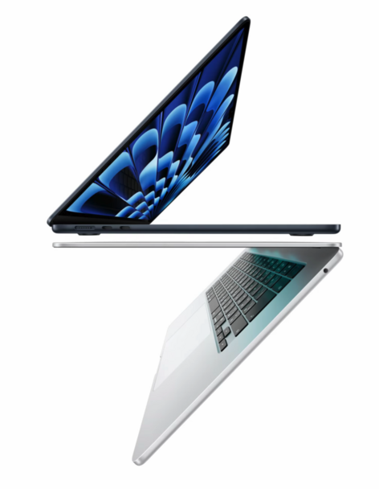
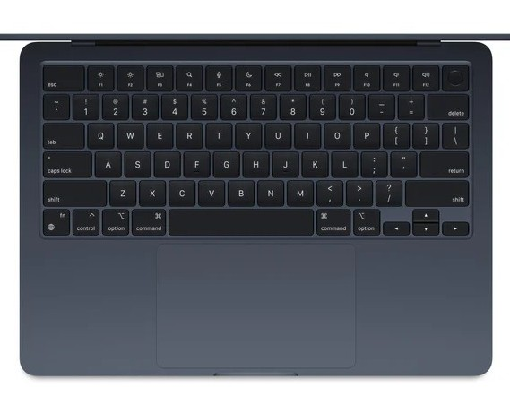

⚙️ Performance – Apple M3 Chip
The biggest upgrade is the Apple M3 chip, built on advanced 3-nanometer technology. It includes: 8-core CPU (for fast processing) Up to 10-core GPU (for graphics performance) 16-core Neural Engine (for AI and machine learning tasks) What this means in real use: Smooth browsing with many tabs open Fast coding and compiling for developers Comfortable photo editing and light video editing Efficient multitasking without lag For someone like you aiming to become a software engineer 👨💻, this laptop can easily handle: VS Code Python, C++, Java projects Web development Running lightweight virtual environments It stays fast while consuming less power compared to traditional Intel laptops.
🎨 Display – Bright and Sharp
The MacBook Air M3 features a Liquid Retina display: 13.6-inch or 15.3-inch options High resolution with sharp text Wide color support (P3 color gamut) 500 nits brightness Text looks extremely crisp, which is perfect for long coding sessions. Colors are vibrant, making it good for media consumption and creative work. The thin bezels and notch design give it a modern look.

🔋 Battery Life – All-Day Power
Battery life is one of its strongest points. Up to 18 hours of video playback Easily lasts a full day of classes or work Energy-efficient M3 chip You can code, attend online meetings, watch lectures, and browse without worrying about charging constantly.
🧊 Cooling – Silent and Fanless
The MacBook Air M3 has a fanless design. This means: Completely silent operation No fan noise Less dust buildup Even during heavy tasks, it remains quiet. However, for extremely heavy professional video editing, MacBook Pro models are better due to active cooling.
💻 Design and Build Quality
Apple is known for premium design, and this laptop continues that tradition: Thin and lightweight aluminum body Very portable and easy to carry Available in multiple elegant colors Strong and durable build It feels solid and premium in hand.

⌨️ Keyboard and Trackpad
Backlit Magic Keyboard Comfortable key travel Large and extremely smooth trackpad Accurate gesture controls Typing for long hours feels comfortable — very important for programmers.

📷 Camera, Speakers & Microphones
1080p FaceTime HD camera Clear microphone quality Excellent stereo speakers with spatial audio support Video calls look clear and professional. The speaker quality is surprisingly powerful for such a thin laptop.
🔌 Ports and Connectivity
- The MacBook Air M3 includes:
- MagSafe charging port
- Two Thunderbolt / USB-C ports
- 3.5mm headphone jack
- Wi-Fi 6E
- Bluetooth 5.3
- The Thunderbolt ports support:

🧠 RAM and Storage Options
8GB / 16GB / 24GB unified memory 256GB to 2TB SSD storage For programming and long-term use, 16GB RAM is recommended.
🍎 MacOS Experience
- 1. It runs macOS, which provides:
- Smooth performance
- Strong security
- Regular updates
- Seamless integration with iPhone and iPad Features like AirDrop, Handoff, and iMessage sync make productivity easier if you use other Apple devices.